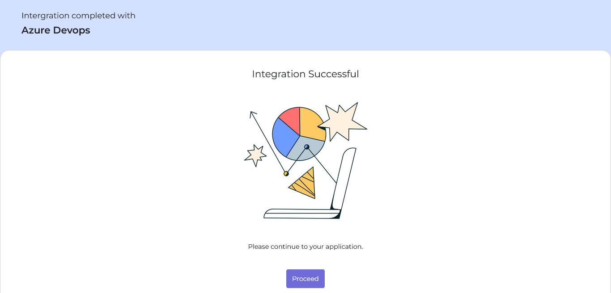
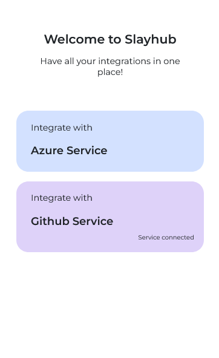
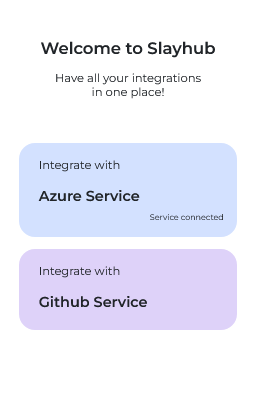
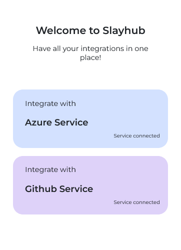
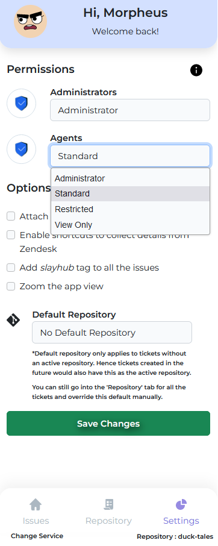
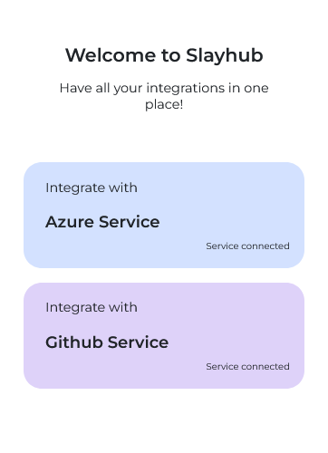
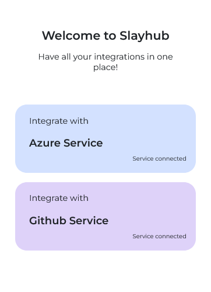

Welcome to Slayhub! We would like to thank you for choosing our product - Slayhub.
It’s built with laravel-vue. It’s fully responsive and looks well. It is a modern design and high-speed performance app. To use Slayhub for Zendesk integration with Azure ❘❘ Github.
How does it work?
Authorization
The GitHub OAuth user token is used by SlayHub to perform all of the needed actions within GitHub on your behalf.
It uses the OAuth token to perform actions that are listed below.
List repository issues
Create issues
Add and list comments of an issue
List repositories both public and private
Repository information like labels, assignees and status
Webhooks Configuration
Repository
Using the OAuth, it'll retrive the list of all the organization or individual repositories based on the settings.
Issues
Using the OAuth, it'll be able to add and list issues of the repository associated with the active ticket and will be able to check status, labels & comments of the issue.
Webhooks
Webhooks are event driven APIs used to do realtime updations in SlayHub, the permissions requested are the most minimal ones that is required to perform all the functions available in SlayHub.
How to use?
Every ticket requires a linked repository to work.
Authentication
SlayHub supports both Github and Azure DevOps repositories.
SlayHub uses OAuth Tokens to perform actions on your repositories on your behalf.
Without providing appropriate permissions, the application won't be able to perform any of its functions. It would thus keep requesting for permissions until the user grants what is required.
Once Slayhub is done loading you get to pick your Version Control.
Once you clicked continue, a tab would open up with a confirmation page. Please read through the provided data carefully and if you consent click on the Authorize Button.
You should be redirected to the github page for authentication. If you have an active account it would request access, otherwise, it would request you to login. If you want Slayhub to fetch Organization Repositories then click on the 'Request or Grant' button based who the owns the organization which is highlighted in red. Once you have added every organization that you wanted click on Authorize Slayhub to continue.
 Import Demo Data">
SlayHub supports both Github and Azure DevOps repositories.
 Import Demo Data">
 Import Demo Data">
 Import Demo Data">
Change your service seamlessly
You can change the service through the change Service button
Default repository
The default state where a repository not linked to the ticket.
Click on the highlighted button to navigate to the repository tab.
Click on the switch to active any of the repository to link that repository to the active ticket.
How to link a repository
With Slayhub you can change the linked repository seamlessly.
Navigate to the repository tab and click on the required repository switch.
Wait till the repository is active and you are good to go.
Warning : Actions and Stats would only be available after you have linked a repository to the ticket.
Create Issue
If not in the issues tab, navigate there and click on the Create Issue button.
You should see a form titled 'Add New Issue', if so then start filling the form with the required data and click on Create Issue when done.
Mandatory fields :
Everything except Description are mandatory fields
It would take a second to submit, the status of the process can be seen on the submit button. Once its done submitting the form will be emptied out and you can close the form.
Submitting :
Success : ✔
On closing the form you should be back in the issues tab and notice the raised issue listed there. You can click on the view button to reveal more in-depth data on the raised issue.
Link Issue
Navigate to the issues tab and click on the 'Link Issue' button.
You should get a menu with a dropdown, where you can select the required issue and click on Link Issue.
Like the issue creation it also has the process status displayed on the button. If you try to link an already linked issue you would get an 'Already Linked' status back.
On successful completion you the form would reset and you can close the window and would find your linked issue listed in the issue tab.
Add comment
Warning : you should have a linked or raised issue to comment on first !
In order to add a comment, Firsrt navigate to the issue tab and click on the view button.
Once you are in the view section of the desired issue, you can click on the comments button which is highlighted in red.
You should see the 'Add Comment' form opened, enter your comment and click on the 'Submit Comment' button. You can close the window once you are done.
You should still be in the 'View Issue' window and you'd find all the comments highlighted and as agent in the comments section.
What is two way linking ?
Two-way linking is the process where the data would be synced on both ends while the respective issue would be added or linked.
In forced mode the data would be wiped from SlayHub, but with two-way linking SlayHub would sync it from github, the next time if the same repository and issue is linked to the ticket.
But, wait how would the devs reply ? Don't worry we got you covered.
Here is the result of your actions reflected on github.
Now its the developer's turn to reply, they can reply to this conversation using the #client or #Client tag.
These comments would be delivered to Slayhub in realtime!
Settings
You can tweak the settings and find a combination that suit your needs.
Navigate to the settings tab by clicking on the Settings Tab button.
Permissions

This can be tweaked to restrict and give access to all the default zendesk roles. It has prewritten collection of permission levels.
Administrator : Full Control
Standard: Full Control - Settings Access (Can't change permissions)
Restricted : Standard - Repository Tab Access but no settings access
View Only : No Actions Available, Its a read only permission level.
Text Formatting & Labels
Zendesk Hyperlink to issue : Adds a hyperlink along with the description that points to the ticket on zendesk.
Quick Fill Buttons : Adds the 'Quick Fill' buttons 'Create Issue' form.
subject : Pushes the 'Ticket subject' data into the 'Issue Subject' while adding a new issue.
description : Pushes the 'Ticket Description' into the 'Issue Description' field in the form.
latest : Pushes the last message in the Zendesk's Ticket Conversation into the 'Issue Description' field.
full : Pushes the entire conversation in the Zendesk's Ticket into the 'Issue Description' field as a 'Conversation Thread'.
clear quick fill : Clears the all the quick fill in the field.
Slayhub Tag To Raised Issue : Adds the slayhub Label onto the 'Raised Issue' on GitHub which would facilitate easy sorting.


.png)

.png)
.png)  Import Demo Data">
 Import Demo Data">